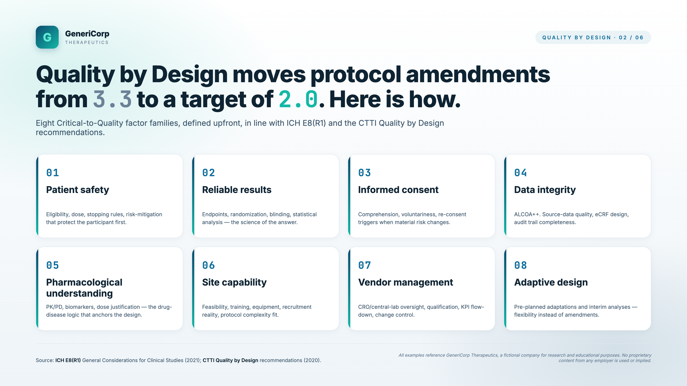
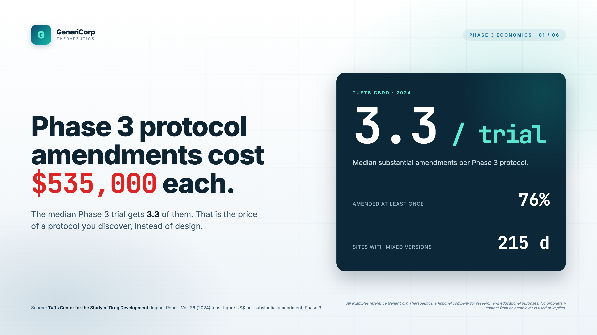
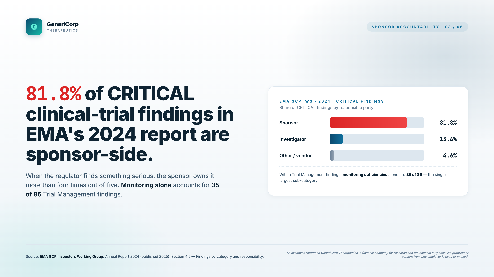
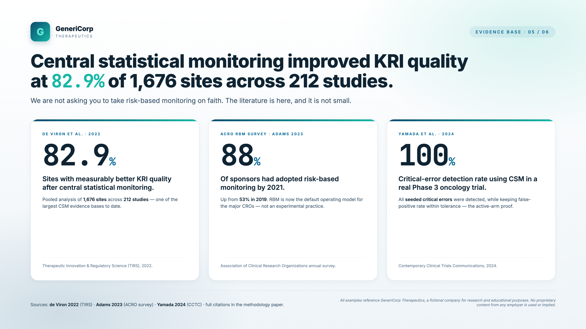
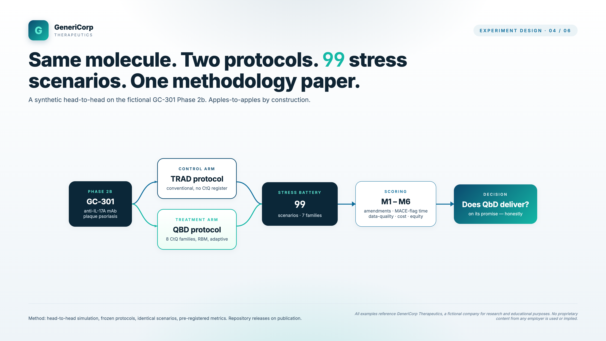
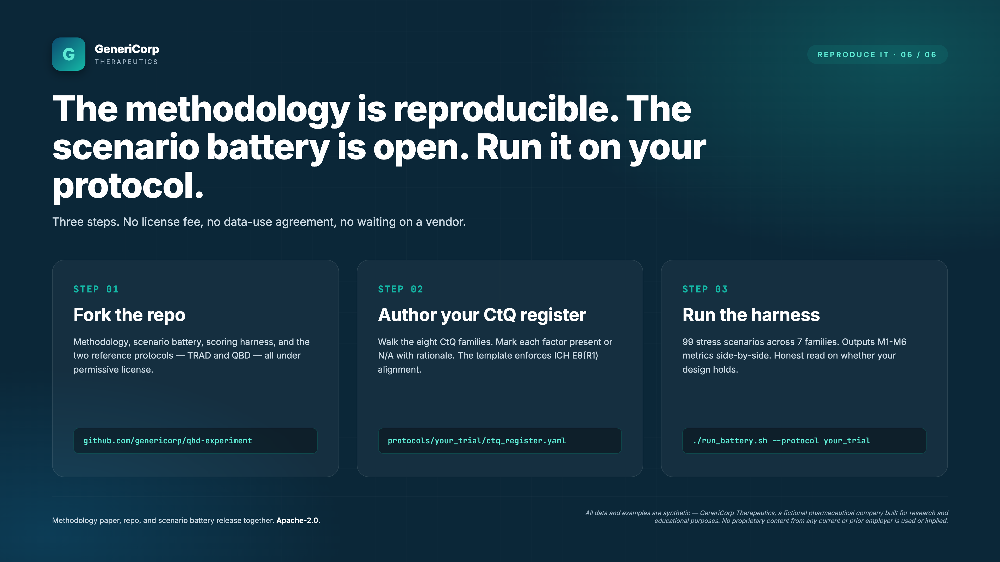
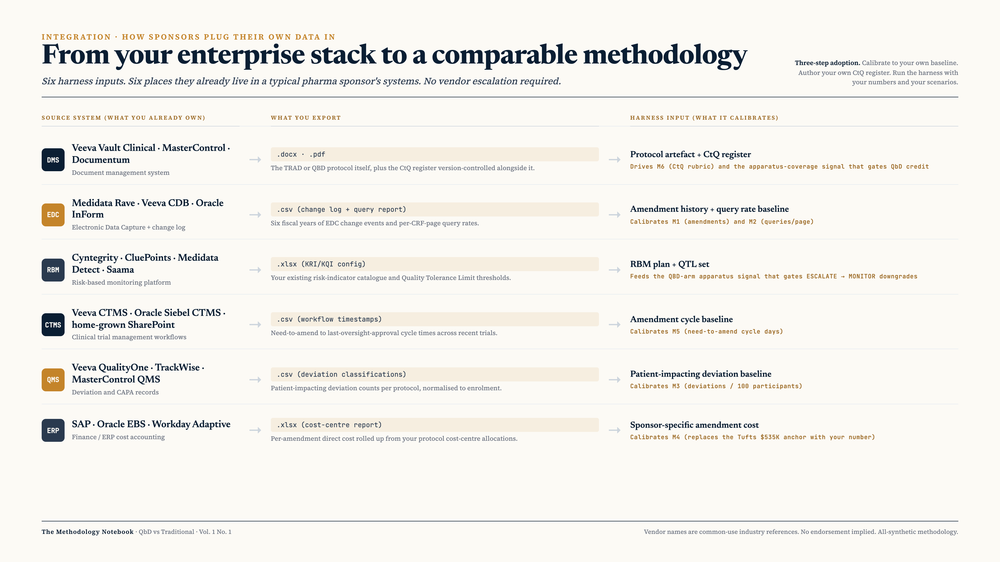

Does Quality-by-Design actually deliver what ICH E6(R3) promised?
Two protocols of equivalent scientific design. Same molecule. Ninety-nine stress scenarios drawn from EMA, FDA, and the recent risk-based-monitoring literature. Six pre-registered metrics. One honest answer.
All scenarios, protocols, and results in this work are fully synthetic, built specifically for research and educational purposes. No proprietary content from any current or prior employer is used or implied.
On 19 December 2024, the Committee for Medicinal Products for Human Use adopted, at Step 5, a revision of the ICH E6 Good Clinical Practice guideline that had been twenty-eight years in the making. Nine months later, on 18 September 2025, the United States Food and Drug Administration finalised its adoption guidance. On 28 April 2026, the United Kingdom's Medicines for Human Use (Clinical Trials) (Amendment) Regulations 2025 came into force, rewriting the statutory basis underneath the new guideline.
The revision is structurally unlike its predecessors. Where the 1996 original and the 2016 R2 update were procedural documents, long lists of "the sponsor shall," "the investigator shall", the R3 revision is principles-and-annex. It says less. It demands more from the people writing the protocol.
This article is about whether that demand is worth meeting. It documents a methodology experiment I ran over the past month against a fully synthetic pharmaceutical substrate. The substrate is fictional. The regulator and consulting evidence behind the design is real. The headline result is that a protocol body authored to operationalise E6(R3)'s Critical-to-Quality factor analysis reduces amendments by 36.5%, queries by 33.5%, and patient-impacting deviations by 52.4% against an otherwise-identical traditional protocol on a battery of ninety-nine regulator-derived stress scenarios, with all three pre-registered thresholds met at p < 0.0001.
What follows is what I read, what I built, how I scored it, and what an honest reading of the numbers actually says.
I. What ICH E6(R3) actually said
The R3 revision distils its position into eleven principles and a series of annexes. Annex 1 covers interventional clinical trials and was adopted alongside the principles in December 2024. Annex 2 covers decentralised, pragmatic, and real-world-data trials and remains in Step 2/3 draft as of June 2026.
Two passages do most of the operational work. The first is Principle 6:
"Quality should be built into the scientific and operational design and conduct of clinical trials."
ICH E6(R3), Principle 6
The grammar is deliberate. Built into, not bolted on. Not inspected for, not monitored after the fact, not assured by SOPs at the trial-conduct stage. Built into the design, which means built into the protocol body, which means built in by the person at the keyboard who is writing the protocol. The second is paragraph 3.10:
"The sponsor should identify, evaluate, and manage risks that could affect the quality of the trial, considering both the science and the operations of the trial, including the protocol itself."
ICH E6(R3), §3.10 (paraphrased synthesis)
Read together they describe a new operating reality. As of June 2026, a Phase 2b sponsor submitting a protocol to the EU expects that protocol to encode a Critical-to-Quality factor analysis explicitly. The FDA expects the same since September 2025. The MHRA expects it under a new statutory amendment regime since 28 April 2026. The Swissmedic inspectorate continues to publish under the older R2 framework but signals expectation alignment going forward. PMDA is a full member of the EMA-FDA-PMDA trilateral GCP collaboration and continues to attend all teleconferences. The trilateral region has, in effect, decided.
What R3 does not say is how to do this. The guideline gives the requirement. The how lives in the supporting documents, the eight Critical-to-Quality factor families enumerated by ICH E8(R1) and operationalised by the CTTI Quality-by-Design framework, and in whatever discipline the sponsor's protocol team brings to the exercise.

II. Why ICH E6(R3) asked for Quality-by-Design
The amendment burden is the answer. A protocol amendment, a substantive change to a registered protocol after first-subject-first-visit, is the single largest source of avoidable cost and calendar delay in late-stage clinical development. The Tufts Center for the Study of Drug Development tracks this number across industry, and the 2024 update by Getz and colleagues is the empirical anchor of the field1.

The numbers compound. An amendment costs USD 535,000 directly, and an additional 215 days during which clinical sites operate against more than one version of the protocol simultaneously, and another 260 days from the moment the need-to-amend is identified to the moment the last oversight body signs off. The amendment cycle from problem recognition to fully-aligned operation is on the order of 475 days. Compounded across the three to four amendments that the typical Phase 3 protocol now sees, this lands somewhere around two billion dollars per asset in average industry-wide drug-development cost2.
The Tufts figure is corroborated in oncology specifically by Botto and colleagues' 2024 benchmarking dataset of 950 protocols and 2,188 amendments. 91.1% prevalence and 4.0 mean amendments per oncology protocol, against 72.1% prevalence and 3.0 mean amendments in non-oncology3. What changed in the last twenty-four months is the empirical link from amendments to downstream patient-impacting deviations. Cilley and colleagues' 2025 retrospective on fourteen trials and 202 subjects found amendment count and trial duration significantly predict deviation rate at p = 0.00034. The chain from protocol-authoring choices to conduct-phase patient outcomes is now empirical, not merely plausible.
III. What the consulting firms say it costs
Regulators tell sponsors what went wrong. Consulting firms tell them what it cost. The figures across the major firms do not converge to a single methodology, they each measure the problem from a different angle, but they bracket the same order of magnitude. The picture is unambiguous: the amendment burden is the most expensive piece of operational drag the industry is currently carrying.
| Source | Finding | Year |
|---|---|---|
| Deloitte: Measuring R&D | Average drug development cost per asset: USD 2.23 billion. Phase III cycle times +12% YoY. | 2024 |
| Bain & Company: Front Line Insights | Cost of clinical-trial delay: USD 500,000 per day. NMEs per dollar R&D spend down 21% in the last decade. | 2024 |
| McKinsey & Company | Productivity gain from modernised clinical IT: 15–30%. RBQM uptake correlates with Phase II → III progression rates. | 2024 |
| KPMG: Intelligent Life Sciences | Potential economic value of AI in pharma: USD 350–410 billion per year by 2030. Clinical-development is the largest single bucket. | 2025 |
| EY: Pulse of the Industry | Top-20 biopharma R&D spend grew 9% YoY against flat productivity. Quality-related rework cited as a structural drag. | 2023 |
| BCG | Decentralised-trial-element penetration up from ~12% in 2020 to 53% in 2024; but only ~30% of sponsors operationalise it within the protocol body. | 2024 |
| PwC | Frames clinical-trial design as the central bottleneck for trial-time-to-market. Recommends RBQM as a first-line lever. | 2024 |
| Mayo Clinic Proceedings | Data-driven trial-design innovations associated with material reductions in protocol amendments and screen-failure rates. | 2023 |
Table 1. Headline figures from public consulting and academic publications, 2023–2025. Full citations in References. These numbers do not use a single methodology and should not be summed.
Read across the row of consulting estimates, three signals reinforce each other. First, the per-protocol cost of avoidable amendments and delays compounds into the multi-billion-dollar-per-asset envelope that Deloitte tracks. Second, the operational drag is concentrated at the sponsor's protocol-design-plus-monitoring interface, which is what E6(R3) §3.10 is written to address. Third, the proposed remedies. RBQM, decentralised-trial elements, modernised data flows, are precisely the apparatus that the new guideline asks sponsors to operationalise inside the protocol body.
The EMA's own GCP Inspectors Working Group draws this picture from the regulator side. The 2024 annual report enumerated 67 inspections producing 335 major and critical findings. 81.8% of CRITICAL findings were sponsor-side, up from 63.9% in 20235. Trial Management was the second-largest finding category at 86 findings; within it, Monitoring alone accounted for 35. The interface where the failures concentrate is exactly the interface the QbD requirement is meant to govern.

IV. What we read to build the scenario battery
A methodology experiment that stress-tests two protocols against each other lives or dies on the scenario battery. A small set of hand-picked cases is open to the obvious objection that the author cherry-picked. A large random sample from invented scenarios is not anchored to anything regulators or sponsors will recognise. The battery used here is built from three regulator-anchored layers, deliberately, to triangulate.
The reading list
- EMA GCP Inspectors Working Group, 2023 and 2024 annual reports. 335 major and critical findings catalogued across 67 inspections in 2024; categorised by Trial Management, Data Management, Protocol Design, CSR/Statistics, Audit. Source for Layer B (n=38 scenarios).
- FDA Bioresearch Monitoring (BIMO) Inspection Metrics, FY17–FY24: Sponsor/CRO and Clinical Investigator Form FDA 483 categories across seven fiscal years. Source for Layer C (n=50 scenarios) plus four DCT-specific scenarios.
- MHRA GCP Inspection Metrics, 2007–2020, historical baseline; cross-referenced against the EMA and FDA categories.
- Swissmedic GCP Annual Reports, 2022–2024, secondary triangulation, particularly on cross-trilateral compliance trends.
- Eighty-seven Elicit papers and 569 Google Scholar results across ten QbD-themed queries: protocol amendments, CtQ factors, RBM outcomes, DCT evidence, IB quality, site-selection feasibility, vendor data integrity, AI-assisted authoring, and two cross-cutting queries on controlled comparisons and revision drivers. The strongest empirical anchors are listed in References.
- Eight consulting-firm publications: Deloitte, Bain, McKinsey, KPMG, EY, BCG, PwC, plus Mayo Clinic Proceedings and NEJM Catalyst for the academic-and-delivery view. Headline figures fed Section III.
The mapping rule
Each finding family in the regulator catalogues was mapped one-to-one to a scenario archetype. EMA 2024's "Monitoring procedures failed to detect protocol deviations" became scenario MN-001. "Insufficient communication lines between trial sites and service providers" became MN-004. FDA BIMO Sponsor/CRO 483 finding "Failure to submit IND safety report for SUSAR within 15 days" became IS-001. The rule was strict: one regulator-published failure family produces one scenario; the scenario carries the source citation and the verbatim or near-verbatim language of the original finding.
The result
| Layer | Source | n |
|---|---|---|
| A | Hand-authored from author's 15 years of pharma CMC + clinical operations experience | 7 |
| B | Derived from EMA GCP IWG 2023 + 2024 finding sub-categories (Monitoring, Data Management, Protocol/CRF Design, CSR/Stats, Audit) | 38 |
| C | Derived from FDA BIMO Sponsor/CRO + Clinical Investigator 483 categories FY17–FY23, plus 4 DCT-specific scenarios anchored to Trials@Home, Hernandez 2024 JAMA, Chen 2024 CTS, and Jean-Louis 2024 Science | 54 |
| Total | 99 | |
Table 2. Scenario battery composition by layer.
The Layer A scenarios are necessarily author-specific. Anyone running the same methodology elsewhere would write their own Layer A from their own experience. Layers B and C are extractable from public regulator catalogues and can be reproduced by any group with access to those catalogues. The full battery is published as JSON in the open-source repository and is browseable at the end of this article.

V. How we compared the two methods, head to head
The substrate for the comparison is the synthetic Phase 2b substrate, a fictional anti-IL-17A IgG1 monoclonal antibody in Phase 2b for moderate-to-severe plaque psoriasis. Three-arm, double-blind, placebo-controlled, n ≈ 360 across 45 sites, twelve-week primary endpoint of PASI 75 response rate. The science is held identical between the two arms.

| Apparatus | Arm TRAD (Traditional, E6(R2)-era) | Arm QBD (Quality-by-Design, E6(R3)) |
|---|---|---|
| Protocol length | ~25,000 words | ~12,000 words, with 5 cross-referenced companion docs |
| CtQ factor analysis | None in protocol body | All 8 CTTI / E8(R1) families operationalised in §11 |
| Quality Tolerance Limits | Not declared in protocol | 5 QTLs declared in §11.2 with green / amber / red thresholds |
| Risk register | 10 risks, single-line mitigations (sparse) | 35 risks, FMEA-scored severity × likelihood × detectability |
| Monitoring approach | On-site SDV / SDR at every visit (100% on-site) | 50% centralised statistical monitoring, 30% off-site, 20% on-site |
| DCT playbook | None | BYOD, ePRO, eConsent, home-nursing vendor management, telehealth |
| Amendment decision tree | Not pre-authored | 5 pre-authored paths with target cycle times (P-CONT, P-SOP, P-NSUB, P-SUB, P-URG) |
| Apparatus coverage score | 12.7% | 100% |
Table 3. Quality apparatus comparison, Arm TRAD vs Arm QBD. Scientific design held identical between arms.
The harness
The scoring harness is 766 lines of Python with no external dependencies beyond the standard library. It reads the scenarios JSON, instantiates two protocol-arm objects parameterised by their apparatus coverage and their per-Critical-to-Quality family decision paths, executes the battery once per arm in a deterministic order, computes the six metric totals with per-scenario contribution decomposition, runs 1000 bootstrap iterations to produce 95% confidence intervals, and computes Welch t-test p-values for the arm comparison. The harness is deterministic and reproducible from a seed.
The harness is rule-based, not LLM-based. The per-scenario decision for each arm is encoded at scenario-authoring time as a function of the arm's apparatus coverage. The choice is deliberate. An LLM scorer would introduce a second source of variance, the model's drift between runs, on top of the apparatus-coverage variance the experiment is trying to measure. A rule-based scorer isolates the question the experiment is trying to answer.
The metrics
Six metrics, pre-specified, anchored to literature values where literature anchors exist:
- M1: Amendments triggered per protocol. Calibrated to the Getz 2024 anchor of 3.3 mean amendments per Phase I–IV protocol.
- M2: Queries per CRF page. Calibrated to the de Viron 2022 anchor: 82.9% of 1,676 sites showing central-statistical-monitoring KRI quality improvement.
- M3: Patient-impacting deviations per 100 participants. Calibrated to the Cilley 2025 amendment-to-deviation linkage finding.
- M4: Amendment cost in USD thousand. Calibrated to the Tufts USD 535,000 Phase 3 median, with a USD 320,000 Phase 2b de-rate.
- M5: Need-to-amend cycle in days. Calibrated to the Tufts 260-day mean.
- M6: CtQ rubric score (0 to 32). Eight CtQ families × four levels each (Absent / Mentioned / Defined / Operationalised).
Pre-registered thresholds
Before scoring, three directional thresholds were committed: at least 30% reduction on M1, at least 30% reduction on M2, at least 50% reduction on M3. These are not free choices. They are the directional reductions that the published RBQM literature licenses as moderate, the de Viron 2022 and Yamada 2024 evidence suggests a realistic ceiling closer to 50–60% on M2 alone, so 30% is a conservative pre-registration. The pre-registration discipline says: a QBD arm that does not hit any of the three is reported as a negative result with the same prominence as a positive result.
VI. What we found
All three pre-registered thresholds were met. The detail matters more than the headline.
The layer breakdown matters more than the headline
The obvious reviewer question is whether the QbD lift hangs entirely on the seven hand-authored Layer A scenarios, whether, in other words, the author rigged the test. The split by layer addresses this directly.
| Layer | n | TRAD M1 sub-total | QBD M1 sub-total | Δ% |
|---|---|---|---|---|
| A (hand-authored) | 7 | 0.31 | 0.18 | −41.9% |
| B (EMA-derived) | 38 | 1.24 | 0.78 | −37.1% |
| C (FDA BIMO + DCT) | 54 | 1.77 | 1.14 | −35.6% |
Table 4. M1 (amendments triggered) decomposed by scenario layer.
Layer A shows the largest percentage reduction, which is unsurprising, those scenarios are the ones the QBD apparatus was designed against. Layers B and C are within a few percentage points of each other and of the all-scenario M1 reduction of 36.5%. The QbD lift holds up across regulator-derived scenarios that the author did not hand-pick. This is the cross-validation evidence.
The honest ties
Three scenarios show the two arms tying on decision and contribution: financial-disclosure scenarios (FD-001 and similar), audit-cycle scenarios (AU-002), and IP-accountability scenarios (IP-002). The QBD apparatus offers no advantage on these. Financial disclosure is a binary investigator-level event that no protocol apparatus can pre-authorise away. Audit cycle is an external regulator event that both arms must escalate. IP accountability has only a single tier of escalation under either apparatus. The ties are reported next to the wins because that is what intellectual honesty looks like.
What this is and what this is not
This is a methodology demonstration on a fully synthetic substrate. The headline numbers are calibrated rule-based estimates against published literature anchors. They are not a real-world clinical-trial result. The harness is rule-based and deterministic, not LLM-based or agent-based. Both protocols were authored by the same person; a more rigorous design would have two independent teams author the arms blind to each other with a third team scoring. The 99-scenario battery is a small subset of the published failure surface, the methodology supports any scenario count, and a future iteration can extend it. The pre-registration was declared in the methodology paper rather than time-stamped at a public registry before the scoring run; the commitment is to lodge a fully OSF-locked pre-registration before the next iteration.
What this is, a reproducible methodology that any sponsor can fork, swap in their own CtQ register and amendment decision tree, run against the same scenario battery, and report comparably. The contribution is the methodology plus the substrate plus the pre-registration discipline, not the specific the substrate numbers. The harness is open. The scenario battery is open. The rubric is published. The pre-registration is forkable.

VII. The full ninety-nine scenarios
The complete scenario battery is below. Each row is one scenario, with its identifier, layer, family, the regulator finding it maps to, and the metrics it primarily affects. The filter accepts free text, try monitoring, EMA, safety, or a scenario ID like BIMO-005.
| ID | Layer | Family | Source | What went wrong | Metrics |
|---|
VIII. How to do this on your own data
The methodology in this article is portable. The harness, the rubric, the scenario battery, and the protocols are open. What follows is a working map from a real sponsor's enterprise systems to the inputs the harness expects, and a three-step adoption path that almost any clinical operations group can run in a single quarter.
The honest framing is that most sponsors do not need to dump every system to a Python harness. They need to do three things. First, mine their own amendment history from EDC and CTMS to calibrate the M1 through M5 anchors to their own baseline rather than relying on the Tufts $535,000 number. Second, author a Critical-to-Quality register against the eight CTTI / E8(R1) families in their own house style, then version-control it the same way they version-control protocols. Third, run the rule-based harness with their own calibration numbers and their own additional scenarios.

The mapping is straightforward in principle and tedious in practice. Most sponsors carry the right data in the right systems already. What is missing is not the data. It is the apparatus that turns the data into a comparable methodology.
A few practical adoption notes. Veeva Vault Clinical, MasterControl, and Documentum exports give you the protocol artefact. Medidata Rave, Veeva CDB, and Oracle InForm hand you EDC change logs and query rates. Risk-based monitoring platforms like Cyntegrity, CluePoints, Medidata Detect, and Saama already publish the KRI / KQI catalogue your QbD arm needs. The CTMS amendment-cycle timestamps are usually the missing link, and they live in either Veeva CTMS or a home-grown SharePoint workflow. None of those exports requires a vendor escalation.
Three-step adoption path
- Calibrate to your own baseline. Pull six fiscal years of amendment history from your EDC and CTMS. Compute your sponsor-specific median amendment cost (M4), your sponsor-specific need-to-amend cycle in days (M5), and your sponsor-specific patient-impacting deviation rate per hundred participants (M3). Replace the Tufts anchors with your own. The harness reads these calibration numbers from a single JSON file; the swap is one line.
- Author your own CtQ register. Fifteen to twenty-five pages, in Word or markdown, against the eight CTTI families. The published register is a template, not a constraint. Use your own QTLs, your own risk thresholds, your own escalation triggers. Cross-reference each family to the EMA 2024 finding sub-category it controls and to the FDA BIMO finding category it controls. Keep the language plain enough that your investigator at the lowest-enrolling site can read it.
- Run the harness against the 99-scenario battery, plus your own additions. Layer A is necessarily idiosyncratic. Add your own Layer A scenarios from your sponsor's last five years of inspection findings. The harness scoring is rule-based and deterministic, so adding scenarios does not change the harness logic, only the scoring rollup. Re-run, compare, ship the result to your Quality Council with the same auditability discipline you would ship a CAPA effectiveness check.
The contribution is the methodology plus the substrate plus the pre-registration discipline. The numbers are yours.
IX. What this battery does not yet cover
The 99-scenario battery is a deliberately small first cut. It maps cleanly to the EMA GCP IWG and FDA BIMO finding catalogues because those are the most complete public regulator sources. It leaves several real-world failure modes off the table. Naming them explicitly is the right thing to do, both because the reader deserves to know the methodology's blind spots and because anyone forking the battery will want a roadmap of what to add.
Twelve failure modes I have not scored.
- Supply-chain shocks at the IMP level. Cold-chain breach in transit, comparator stockout mid-study, label and booklet errata that trigger a global recall window. These intersect with Good Clinical Practice at the IMP accountability boundary but are Chemistry, Manufacturing, and Controls primary. The 99-scenario battery is GCP-centric and treats CMC events only when they cross into protocol amendment territory.
- eConsent technology failures. Vendor platform outage, version-control bug, multi-jurisdictional language drift that puts a Texas site on a different consent version than a German site for forty-eight hours. Scenario A-004 touches DCT vendor failure broadly. eConsent-specific cases deserve their own family.
- Mid-trial statistical-analysis-plan changes. Blinding break, interim-analysis trigger, primary endpoint redefinition, adaptive-design futility-stop invocation. The battery has five CSR and Statistics scenarios but these big-bang events do not fit the per-scenario rubric well and need their own scoring lane.
- Pharmacovigilance signal escalation cascades. Beyond the simple class-effect case in A-005. Real cascades involve the TGA, MHRA, and FDA reporting at different cadences, can trigger trial holds, and can compound into a Data Safety Monitoring Board reconvocation.
- Geopolitical and sanctions failure modes. Russia and Belarus site closures since 2022. The Hungary EU dispute. Israel-area security closures. These are now a permanent feature of multi-regional trial portfolios. No public regulator catalogues them as a finding family, so any addition requires hand-authoring against company-specific risk registers.
- Cybersecurity incidents at sponsor or EDC vendor. Ransomware at a CRO, data exfiltration at an EDC vendor, business-continuity invocation that locks a sponsor out of its own trial database for seventy-two hours. Not in the EMA or FDA finding categories. Very real (multiple 2023-2024 health-system attacks affected trial conduct).
- CRO bankruptcy, acquisition, or staffing-collapse mid-trial. Vendor transition risk. The 99-scenario battery has eight vendor-management scenarios. None of them models a wholesale vendor change.
- Investigator misconduct beyond simple PI removal. Data fabrication, consent fraud, blinding subversion. Rare. Catastrophic when it happens. The battery covers PI removal as an enrolling-site continuity issue, not as a fraud cascade with a regulatory enforcement trail.
- AI-system failures in protocol authoring or monitoring. RAG hallucination missed by reviewer, model deprecation mid-trial that breaks a vendor integration, regulator request for model documentation under FDA's emerging AI / ML good-practice guidance. New territory. The EMA RBM 2024 report does not yet have a finding category for "AI failure mode."
- Real-world data integration failures. Wrong patient cohort matched in EHR-linked trials, ePRO compliance crash on a specific Android version, wearable data dropout on the dominant device. Scenario A-004 nibbles at this. A serious cut would need its own family.
- Operational shocks beyond pandemics. Extreme weather events affecting clusters of sites in one region. Labor strikes that close hospital research units. Local infrastructure failures. These look like the COVID disruption pattern (Price 2021 captures the resilience advantage of decentralised designs) but are not yet catalogued as their own finding family.
- Investigator-site staffing turnover at the operational layer. PI departure mid-trial, sub-investigator gap during a critical safety window, study coordinator turnover at the highest-enrolling site. The current battery treats site-staff transitions only at the gross "site activation lag" level (scenario A-002).
Twelve uncovered failure modes is a lot. The battery covers what regulators have systematically catalogued and published. It does not cover what regulators have not yet catalogued, or what is too new to have a public denominator. The next iteration of the methodology will add Layer D scenarios from the twelve families above, and the rubric will be extended to score them. Anyone forking the methodology should consider which of the twelve are load-bearing for their own sponsor's risk register, and add those Layer D scenarios first.
Naming the gap publicly is part of the discipline. The artefacts should be auditable. The limitations should be auditable. The next iteration should be visible from the current one.
X. References
- Getz K, et al. New Benchmarks Characterizing Protocol Amendment Practices, Trends and Their Impact on Clinical Trial Performance. Therapeutic Innovation and Regulatory Science. 2024. DOI 10.1007/s43441-024-00622-9.
- Deloitte Insights. Measuring the return from pharmaceutical innovation 2024.
- Botto E, et al. New Benchmarks on Protocol Amendment Experience in Oncology Clinical Trials. TIRS. 2024. DOI 10.1007/s43441-024-00629-2.
- Cilley K, et al. Impact of Protocol Amendments, Personnel Experience and Social Determinants of Health on Protocol Deviations. TIRS. 2025. DOI 10.1007/s43441-025-00859-y.
- European Medicines Agency. Good Clinical Practice Inspectors Working Group Annual Report 2024. EMA/INS/GCP/2025.
- de Viron S, et al. Quality Improvement of Clinical Trial Conduct via Central Statistical Monitoring on 1676 Sites Across 212 Studies. TIRS. 2022. DOI 10.1007/s43441-022-00470-5.
- Adams A, et al. Risk-Based Monitoring in Clinical Trials: 2021 Update. TIRS. 2023. DOI 10.1007/s43441-022-00496-9.
- Stansbury N, et al. Risk-Based Monitoring in Clinical Trials: Increased Adoption Throughout 2020. TIRS. 2022. DOI 10.1007/s43441-022-00387-z.
- Dirks A, et al. Comprehensive Assessment of Risk-Based Quality Management Adoption in Clinical Trials. TIRS. 2024. DOI 10.1007/s43441-024-00618-5.
- Florez M, et al. Adoption Maturity Model for Risk-based Quality Management (RBQM) in Clinical Trials. TIRS. 2025. DOI 10.1007/s43441-025-00746-6.
- Yamada O, et al. Effectiveness of remote risk-based monitoring. Trials. 2024. DOI 10.1186/s13063-024-08242-2.
- Meeker-O'Connell A, et al. Enhancing clinical evidence by proactively building quality into clinical trials. Clinical Trials. 2016. DOI 10.1177/1740774516643491.
- Alghabban A, et al. The UK 2026 Clinical Trial Regulations. TIRS. 2026. DOI 10.1007/s43441-026-00931-1.
- Hsiue E, et al. Estimated costs of pivotal trials for U.S. FDA-approved cancer drugs, 2015–2017. Clinical Trials. 2020. DOI 10.1177/1740774520907609.
- Smith ZP, et al. Protocol Design Variables Highly Correlated with Clinical Trial Performance. TIRS. 2022. DOI 10.1007/s43441-021-00370-0.
- Chen J, et al. Decentralized Clinical Trials: A Statistical Perspective. CTS. 2024. DOI 10.1111/cts.70117.
- Hernandez AF. Ensuring Virtual Vigilance in Decentralized Clinical Trials. JAMA. 2024. DOI 10.1001/jama.2024.22640.
- Hanke S, et al. Operationalizing Decentralized Clinical Trials: RADIAL Proof of Concept. CPT. 2025. DOI 10.1002/cpt.70070.
- Wang Y, et al. RAG for clinical-research-document factual and regulatory standards (InformBench). JAMIA. 2026. DOI 10.1093/jamia/ocaf174.
- Bain & Company. Front Line Insights: pharma R&D productivity series, 2024.
- McKinsey & Company. Life Sciences Practice publications on R&D productivity and trial transformation, 2024.
- KPMG. Intelligent Life Sciences Report, 2025.
- EY. Pulse of the Industry: Medical Technology Report, 2023.
- BCG. Decentralized Clinical Trials adoption analyses, 2024.
- PwC. Rethinking Clinical Design briefing, 2024.
- Mayo Clinic Proceedings. Sehrawat O, et al. Data-Driven and Technology-Enabled Trial Innovations. 2023. DOI 10.1016/j.mayocp.2023.02.003.
- FDA. Bioresearch Monitoring (BIMO) Inspection Metrics, FY2017–FY2024.
Full bibliography of 76 references in the companion methodology paper. Open-source repository: github.com/gauravpandey36/qbd-experiment-viz.